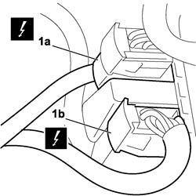
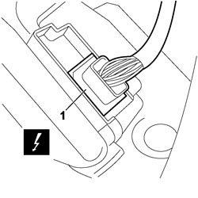

5570T70 PAGER/COMPACT DISC WIRING HARNESS - R&R OR REPLACE
- Path
- Procedures > 55 ELECTRICAL EQUIPMENT > 5570 ACCESSORIES > 5570T CAR RADIO AND CAR TELEPHONE > 5570T70 PAGER/COMPACT DISC WIRING HARNESS - R&R OR REPLACE
- Kind
- repair procedure (removal / refitting; the operation number is the code)
- Applies to
- all engines; all production periods
- Interactive page
- https://sloeber94.github.io/elrnDB-fCrm/en/#/194000783
Applies to: all engines; all production periods
- Turn the ignition key to the OFF position and extract it.
- Disconnect the negative and positive battery terminals and insulate them.
- Wait for 10 minutes before continuing.
Description | Connector | |
|---|---|---|
BATTERY |
Applies to: all engines; all production periods
 Removing
Removing
 Refitting
RefittingOp. 7040A45 RIGHT DASHBOARD SIDE TRIM - R.R.
Op. 5570T85 CD/AUDIO PLAYER LOADER - R R
Op. 7040A31 DASHBOARD COMPARTMENT ASSEMBLY - R.R.
Op. 7040L41 RIGHT FRONT DOOR COMPARTMENT SILL PLATE RR
(Right side)
Op. 7040L44 REAR DOOR RUNNING BOARD (ONE), LEFT OR RIGHT - R.R.
(Right side)
Op. 7040H36 CENTRE PILLAR LOWER ELEMENT (ONE), LEFT OR RIGHT - R.R
Op. 7050A20 ONE-PIECE REAR SEAT CUSHION - R.R.
Op. 7040B26 LOAD PLATFORM COVER BLIND - R+R
Op. 7040B42 PROTECTION GRILLE FOR ANIMAL TRANSPORT - R and R
Op. 7050A47 SIDE PANEL ONE OF REAR SEAT SQUAB LH OR RH R R
Op. 7040B22 LUGGAGE COMPARTMENT/LOAD PLATFORM MOULDING - R+R
Op. 7040B10 LOAD PLATFORM (LUGGAGE PLATFORM) TRIM - R+R
(Right side)
Op. 7040G46 LOAD COMPARTMENT COURTESY LIGHT - R and R
(Right side)
Op. 7040B24 LOAD COMPARTMENT TOP TRIM (ONE) - R+R
(Right side)
Op. 7040B18 LOAD COMPARTMENT LOAD PLATFORM SIDE TRIM ONE LH OR RH - R.R
Op. 5570T95 SUBWOOFER WITH AMPLIFIER BUILT INTO SOUND SYSTEM - R.R.
1. Working under the glove compartment, disconnect electrical connections (1a) and (1b), move the front and rear mat on the vehicle floor pan and release the radio/CD wiring harness from its retainers.
Description | Connector | |
|---|---|---|
1a | HI FI SYSTEM COUPLING |
Description | Connector | |
|---|---|---|
1b | HI FI SYSTEM COUPLING |

Applies to: all engines; all production periods
1. Working in the load compartment, disconnect the electrical connection from the subwoofer and remove the radio/CD wiring harness from the vehicle.
Description | Connector | |
|---|---|---|
1 | HI FI SYSTEM COUPLING |

Applies to: all engines; all production periods
Refitting
Removing- Connect the electrical connection to the subwoofer.
Description | Connector | |
|---|---|---|
HI FI SYSTEM COUPLING |
- Secure the radio/CD wiring harness in its retainers.
- Connect the electrical connections tot he front part of the vehicle under the glove compartment.
Description | Connector | |
|---|---|---|
HI FI SYSTEM COUPLING |
Description | Connector | |
|---|---|---|
HI FI SYSTEM COUPLING |
- Reposition the front and rear mat on the vehicle floor pan.
Op. 5570T95 SUBWOOFER WITH AMPLIFIER BUILT INTO SOUND SYSTEM - R.R.
(Right side)
Op. 7040B18 LOAD COMPARTMENT LOAD PLATFORM SIDE TRIM ONE LH OR RH - R.R
(Right side)
Op. 7040B24 LOAD COMPARTMENT TOP TRIM (ONE) - R+R
(Right side)
Op. 7040G46 LOAD COMPARTMENT COURTESY LIGHT - R and R
Op. 7040B10 LOAD PLATFORM (LUGGAGE PLATFORM) TRIM - R+R
Op. 7040B22 LUGGAGE COMPARTMENT/LOAD PLATFORM MOULDING - R+R
Op. 7050A47 SIDE PANEL ONE OF REAR SEAT SQUAB LH OR RH R R
Op. 7040B42 PROTECTION GRILLE FOR ANIMAL TRANSPORT - R and R
Op. 7040B26 LOAD PLATFORM COVER BLIND - R+R
Op. 7050A20 ONE-PIECE REAR SEAT CUSHION - R.R.
(Right side)
Op. 7040H36 CENTRE PILLAR LOWER ELEMENT (ONE), LEFT OR RIGHT - R.R
(Right side)
Op. 7040L44 REAR DOOR RUNNING BOARD (ONE), LEFT OR RIGHT - R.R.
Op. 7040L41 RIGHT FRONT DOOR COMPARTMENT SILL PLATE RR
Op. 7040A31 DASHBOARD COMPARTMENT ASSEMBLY - R.R.
Op. 5570T85 CD/AUDIO PLAYER LOADER - R R
Op. 7040A45 RIGHT DASHBOARD SIDE TRIM - R.R.
- Connect the battery terminals.
Description | Connector | |
|---|---|---|
BATTERY |
- Check the operation of the sound system.
Topics linked from this page (20)
- 5570T85 CD/AUDIO PLAYER LOADER - R R
- 5570T95 SUBWOOFER WITH AMPLIFIER BUILT INTO SOUND SYSTEM - R.R.
- 5580C AIR BAG SYSTEM
- 7040A31 DASHBOARD COMPARTMENT ASSEMBLY - R.R.
- 7040A45 RIGHT DASHBOARD SIDE TRIM - R.R.
- 7040B10 LOAD PLATFORM (LUGGAGE PLATFORM) TRIM - R+R
- 7040B18 LOAD COMPARTMENT LOAD PLATFORM SIDE TRIM ONE LH OR RH - R.R
- 7040B22 LUGGAGE COMPARTMENT/LOAD PLATFORM MOULDING - R+R
- 7040B24 LOAD COMPARTMENT TOP TRIM (ONE) - R+R
- 7040B26 LOAD PLATFORM COVER BLIND - R+R
- 7040B42 <x>PROTECTION GRILLE FOR ANIMAL TRANSPORT - R&R</x>
- 7040G46 <x>LOAD COMPARTMENT COURTESY LIGHT - R&R</x>
- 7040H36 CENTRE PILLAR LOWER ELEMENT (ONE), LEFT OR RIGHT - R.R
- 7040L41 RIGHT FRONT DOOR COMPARTMENT SILL PLATE RR
- 7040L44 REAR DOOR RUNNING BOARD (ONE), LEFT OR RIGHT - R.R.
- 7050A20 ONE-PIECE REAR SEAT CUSHION - R.R.
- 7050A47 SIDE PANEL ONE OF REAR SEAT SQUAB LH OR RH R R
- A001 BATTERY
- D068 HI-FI SYSTEM COUPLING
- P070 RADIO HI-FI AMPLIFIER